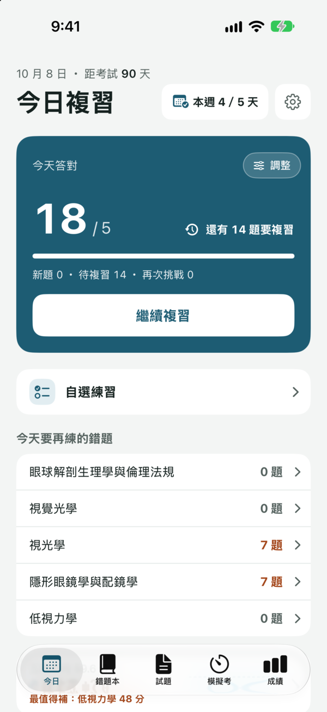

01
讓 AI 看懂畫面與訊號
先用模型讀懂畫面或訊號，再交給 AI 決策，並量測效果。遊戲代理裡訓練了階段、頭像、格子三種分類模型，把截圖變成精簡的狀態再交給語言模型；另一個專案用 ESP32 相機把影像送給模型分析。
2019 → 現在
機械群出身。2022 年獲第十八屆技職之光「技職傑出獎 證照達人」（技術型高中組）。
第 8 名
國手培訓 1,872 小時。另有第 52 屆全國技能競賽冷作青年組第 2 名。
國中自學 Python，進大學後正式轉到資訊。做了 AI 代理、語音轉寫與公司內部系統，並參加資訊類競賽。
從做過的專案整理
01
先用模型讀懂畫面或訊號，再交給 AI 決策，並量測效果。遊戲代理裡訓練了階段、頭像、格子三種分類模型，把截圖變成精簡的狀態再交給語言模型；另一個專案用 ESP32 相機把影像送給模型分析。
02
我習慣先定好怎麼量再下結論：本地模型用固定題組評分、轉寫模型比較會標明指標的限制、交易策略事先登記判斷標準並做隨機對照。結果不成立時照實記錄，例如價格預測模型的前向驗證不成立，就把它當成一項研究結果。
03
除了研究，也做能實際使用的 App 與服務：驗光國考錯題本透過 TestFlight 給朋友使用，班表鬧鐘有另一位使用者，公車到站預測與影片下載則自架在 Windows 主機，手機經 Tailscale 連線。
LLM 代理・畫面辨識
讓 AI 在背景代打一款回合制自走棋類遊戲：畫面辨識把截圖轉成精簡 JSON 狀態，語言模型只負責決策。
0.47 秒
全畫面 OCR，原本 18～25 秒
看作法與限制
語音轉寫・模型比較
上課錄音在家用 GPU 主機轉成逐字稿，再對照當週講義整理成上課紀錄。比較過多個轉寫模型後才選定。
39/45
本機模型的關鍵詞命中（雲端對照 44/45）
看作法與限制
兼職・內部系統
把報價、圖說、工務、會計等人工與 Excel 作業做成公司內部網頁系統，部署在公司主機供同事使用。
34 樘
圖說自動化實案試跑，與人工成品相符
看作法與限制
另有：5G-V2X 路口大車右轉內輪差預警，2026 行動通訊實務競賽決賽入圍。
iOS App・2026-10 起・473 commits
爬取考選部歷屆試題轉成題庫；SwiftUI iOS App 含錯題本、間隔重複與弱點分析，加上 AI 出題解析伺服器，出題經重算與抽樣稽核。透過 TestFlight 給朋友使用。


依專案頁列出的項目整理